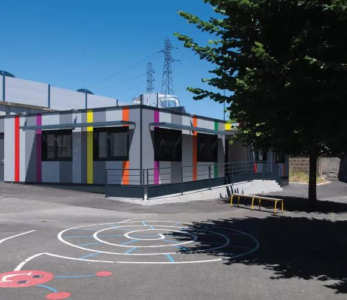

D'Avril 2026 à juin 2026, j'ai eu l'occasion de réaliser un stage à Abeille Informatique, à Cournon d'Auverne. Mon sujet était le suivant : Développement d'un launcher IPTV permettant la transmission des chaînes de la TNT sur Android TV
Mon entreprise fournit à des usagers l'accès à internet. Elle leur propose alors une box Android avec une application IPTV pour regarder le direct des chaînes de la TNT. Cependant, cette application n'était pas intuitive, et les personnes peu habituées à l'informatique se perdaient dans les menus et appelaient souvent mon entreprise pour obtenir de l'aide.
Il m'a donc été demander de réaliser seul une application Android TV de A à Z, comprenant donc l'analyse, le design de l'application, le développement, la manière d'héberger et de distribuer mon application, ainsi que la possibilité d'assurer la maintenance de celle-ci.
Le réel enjeu de cette application était de réussir à la rendre parfaitement intuitive pour que n'importe quel utilisateur, même le moins à l'aise avec l'informatique, puisse l'utiliser facilement.
Pour répondre à ce besoin, j'ai utilisé le langage Kotlin lié au framework Jetpack Compose. J'ai également développé un script PHP lancé par une tâche cron pour générer régulièrement un fichier nécessaire à mon application.
Pour héberger mon application, je me suis rendu compte que le Google Play Store n'était pas adapté. J'ai donc eu à réaliser moi-même un système de mise à jour de mon application. J'ai aussi régulièrement montré à mon maître de stage mon avancement pour voir si si le résultat correspondait à ses attentes.
Ce stage m'a beaucoup apporté, j'ai pu développer mes compétences en Kotlin, en Jetpack Compose et en PHP. Globalement, j'ai aussi pu grandement améliorer mes compétences en développement d'applications. Dans ce projet, j'ai aussi pu faire preuve d'une bonne polyvalence, d'une grande autonomie et j'y ai développé des compétences en design d'application. Pour finir, j'ai aussi pû apprendre comment fonctionnait la transmission des chaînes de télévision
Au final, l'application était totalement intuitive, comme je l'ai terminée beaucoup plus rapidement que prévu, j'ai pu y ajouter un bon nombre de fonctionnalités, et la rendre compatible sur smartphone Android. En plus de cela, mon tuteur a été très satisfait de mon application, je considère donc que le projet a été bien réussi.
Du 19 février 2024 au [date à vérifier] février 2024 et du 22 au 26 avril 2024, j'ai effectué un stage dans le cadre de l'obtention de mon BAFA, en tant qu'animateur auprès d'enfants en élémentaire (6-11 ans) et en maternelle (3-5 ans). Lors de cette expérience, j'ai découvert pour la première fois le monde professionnel au sein d'une équipe. J'ai dû apprendre à assumer des responsabilités, notamment lors d'activités pendant lesquelles je devais parfois m'occuper seul des enfants. J'ai également participé pour la première fois à des réunions d'équipe.

Du 28 avril au 2 mai 2025, j'ai travaillé comme animateur à l'école de Chanteranne auprès d'enfants en élémentaire (6-11 ans). Au mois d'août 2026, j'ai également travaillé comme animateur au centre de Theix. J'ai dû m'occuper du bien-être physique et mental des enfants et organiser des activités adaptées à leur tranche d'âge. J'ai également travaillé avec l'équipe d'animation pour organiser des sorties et de grandes activités. Nous participions chaque soir à des réunions ayant pour but de planifier les activités, de définir le déroulement des journées et d'attribuer les tâches à chacun lors des grandes activités. J'y ai également appris à assumer des responsabilités, notamment lorsque j'emmenais seul un groupe d'enfants en sortie, parfois loin du centre. Je devais veiller à ce qu'ils restent tous groupés, soient présents, ne dérangent personne et arrivent à l'heure aux endroits où nous étions attendus. J'y ai aussi appris de nombreuses compétences pratiques pour proposer des activités aux enfants, comme le bricolage ou encore la couture.